Developmental Classes in Ireland
Explore 99 Developmental classes and activities for kids across Ireland. Developmental classes are most widely available in Dublin, Cork, Tipperary.
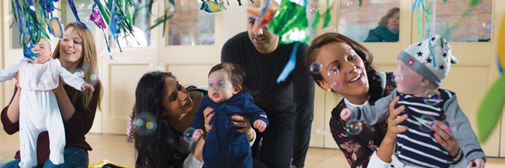
Baby Sensory South Dublin
Multi-sensory baby development classes for babies aged 0-13 months, featuring baby signing, music, light shows, bubbles and puppets to support bonding and early development.
View full details →Baby Sensory South Dublin
Multi-sensory baby development classes for babies aged 0-13 months, featuring baby signing, music, light shows, bubbles and puppets to support bonding and early development.
View full details →

Baby Sensory Dublin Southwest
Multi-sensory baby development classes for babies aged 0-13 months, featuring baby signing, music, light shows, bubbles and puppets to support bonding and early development.
View full details →Baby Sensory Dublin Southwest
Multi-sensory baby development classes for babies aged 0-13 months, featuring baby signing, music, light shows, bubbles and puppets to support bonding and early development.
View full details →Baby Sensory Dublin Southwest
Multi-sensory baby development classes for babies aged 0-13 months, featuring baby signing, music, light shows, bubbles and puppets to support bonding and early development.
View full details →Dimples Baby Massage
Certified baby massage course for pre-crawling babies aged six weeks to eight months, led by a certified infant massage instructor, followed by refreshments and social time for parents.
View full details →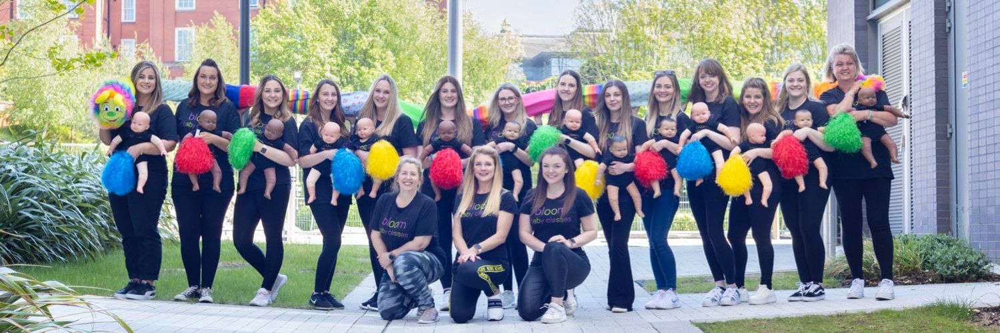

Bloom Baby Classes (Dublin South)
Gentle multi-sensory baby development class combining original music, sensory play and bonding activities for younger babies, run in themed blocks throughout the year.
View full details →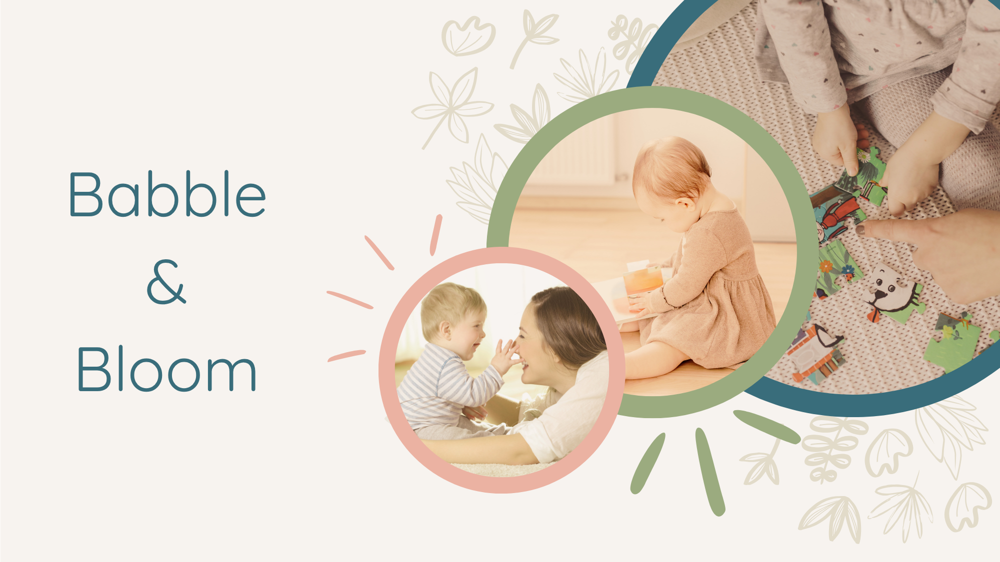

Babble & Bloom
Parent and baby early communication courses: learn evidence-based strategies to support your baby's communication from the very beginning. Created and led by a registered Speech & Language Therapist, you'll learn how to model baby signs, build connection and language through play, and turn everyday moments into communication opportunities - all through relaxed, play-based sessions. Suitable for babies and toddlers aged 6-14 months, Babble & Bloom offers a relaxed and supportive environment to connect with your baby, build confidence in supporting their development, and meet other parents at a similar stage. Join for six weeks of play and practical learning that will help you nurture your baby's communication skills in everyday moments. Please note: while Babble & Bloom is created and led by a Speech & Language Therapist, it is an educational class rather than a Speech & Language Therapy service. Participation does not constitute assessment or therapy, and the course is not a substitute for speech and language assessment or intervention where needed.
View full details →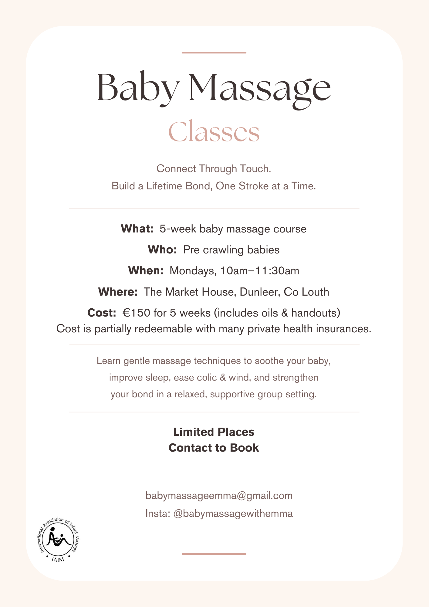

Baby Massage with Emma
Emma is a registered nurse and midwife, recently certified with the IAIM in infant massage, offering baby massage classes in Co. Louth. Each course consists of 5 classes for €150 (most private health insurance companies offer some reimbursement). Email babymassageemma@gmail.com or find her on Instagram @babymassagewithemma for more information or to book.
View full details →

Baby Massage with Laura – Navan & Surrounds
Baby massage classes led by an experienced Paediatric/Neonatal Intensive Care Nurse (10+ years), open to all babies from birth to 12 months, including those with special needs, complex needs, or life-limiting conditions. There is plenty of room for medical equipment such as suction machines, portable ventilators, or feeding pumps, and massage can be adapted for babies with a feeding tube, stoma bag, tracheostomy, CPAP/BiPAP mask, PEG tube, or similar. Classes run in Navan at Red River Yoga Studio (Wednesdays at 10am) and Wilkinstown Community Centre (Mondays at 10am), with 1:1 classes also available. Sessions are relaxed and baby-led, so feeding, changing, walking around, or cuddling your baby during class is fine - just bring a small blanket, as yoga mats, cushions and oils are provided. Tea, coffee and sweet treats are served in the second part of the class, giving parents a chance to sit, chat and get to know each other. Contact via Instagram DM @baby_massage_with_laura or email lauramcq.babymassage@gmail.com
View full details →

Baby Sensory Dunboyne
Baby Sensory classes are designed to support your baby's development from birth to 13 months through gentle sensory activities, music, movement and play. Every activity is carefully designed using research into early childhood development, supporting your baby's sensory, physical and cognitive growth in a natural, fun way. Each class is structured for your baby's stage, from tiny newborns to active explorers, in a warm, welcoming environment. Parents value the class as a special time to bond with their baby, support early development and key milestones, meet other local parents, and enjoy the moment together without pressure. Sessions include sensory play (lights, textures, bubbles and more), music and movement, and varied, age-appropriate activities, all designed to stimulate your baby's senses while keeping things calm and enjoyable for you both.
View full details →

Baby Sensory Kildare & Carlow
Support your baby’s development with research-backed classes parents trust and babies love. Baby Sensory® classes provide ideas for creative play, massage, tummy time, movement, visual development, textures, scents and music in simple practical ways that can be easily repeated at home. We also use a combination of original and traditional songs and rhymes to develop early speech and language skills, and sensory signing activities to help you and your baby communicate from birth. Suitable from birth to 13 months.
View full details →

Bloom Baby Classes North East Ireland
Two classes are on offer: Caterpillar Club for babies aged 0-6 months, and Busy Bees for babies aged 6-15 months. Caterpillar Club is a gentle and calming introduction to our musical sensory classes, designed to support all areas of baby development with a strong focus on parent and baby bonding. Classes awaken baby's early senses and provide stimulation in a fun yet soothing environment using music, sensory props, lights, and movement, finishing with a chill parachute and a short guided baby massage to encourage relaxation and, hopefully, a long nap afterwards. Busy Bees is a fun, lively musical development class designed to help babies grow in confidence as they explore the world around them, encouraging fine and gross motor skills, body awareness, early language development, rhythm, and social interaction. Building on the gentle foundations of Caterpillar Club, Busy Bees introduces instruments, movement, and branded props to support development in all areas through play and music. Classes feature a new theme every week for a whole year: during theme time, babies enjoy themed music, dress-up, sensory lights, fun props, and heuristic treasure baskets. Busy Bees love interacting with each other while exploring the themed activities, while Caterpillar babies can enjoy tummy time alongside sensory lights and themed props. Theme time is also an opportunity for parents to relax, chat, and build friendships within the Bloom community.
View full details →
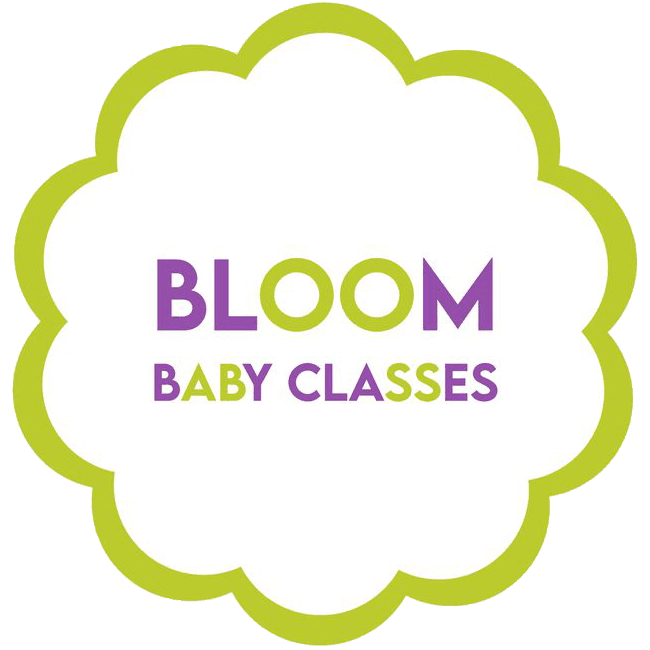
Bloom Baby Classes Wicklow and South Dublin
Classes are available in South Dublin (Sandyford and Dun Laoghaire) and Wicklow (Bray, Greystones, Wicklow Town and Arklow), suitable from 6 weeks old up until your little one begins to confidently walk. Caterpillar Club (6 weeks-6 months) is a gentle and calm introduction to our musical sensory classes, with activities designed to aid all areas of baby development and a strong focus on parent and baby bonding. The class awakens baby's first senses and stimulates them in a fun yet soothing way using music, sensory props and lights, ending with a chill parachute and a short guided baby massage to encourage a long nap. Busy Bees (6-15 months, or until baby is confidently walking) is a fun, lively musical baby development class that focuses on growing baby's confidence for the world around them, encouraging fine and gross motor skills, body awareness, early language skills and rhythm. Building on the gentle activities of Caterpillar Club, this session uses instruments and branded props to support development in all areas. A new theme is explored each week with dress-up, props and themed music: during theme time, Caterpillar Club babies can work on tummy time while Busy Bees practise social skills with their new Bloom pals, exploring a variety of play and sensory heuristic treasure baskets. It's also a chance for parents to catch up and get to know one another.
View full details →

Boyne Babies Sensory Classes
Welcome to Boyne Babies — sensory-rich baby and toddler classes designed to support early development, exploration, and parent–child bonding in a fun and nurturing environment. Our weekly themed sessions include music, movement, lights, textures, messy play, soft play, and interactive sensory activities tailored to different stages, from non-walkers to toddlers aged 2 years. Boyne Babies is also a welcoming space for parents to connect, meet other local families, and enjoy quality time with their little ones in a relaxed and supportive setting. Classes take place weekly at Julianstown Community Centre, offering a calm, engaging, and development-focused experience for both children and parents.
View full details →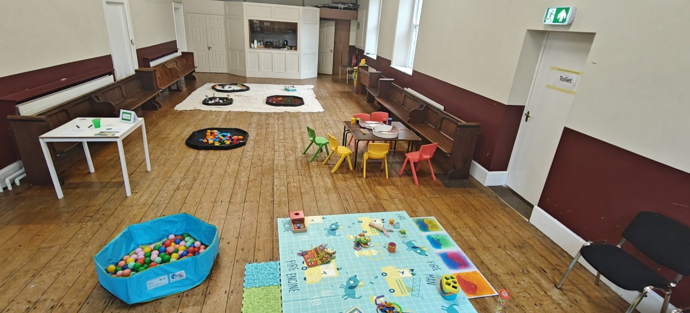
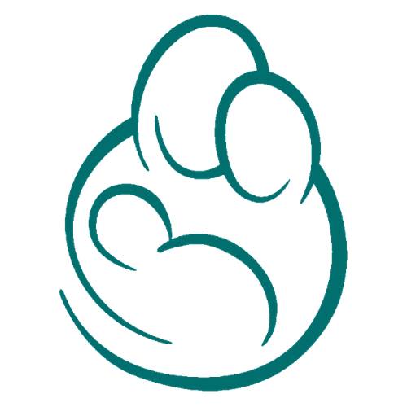
Cuidiú Cork
Our events have become famous for helping parents find the tribe that will offer them support and encouragement along their parenting journey. Whether you are breastfeeding, bottle-feeding, staying at home or working outside of the house, you’re in the right place. From coffee mornings to playgroups, cafe meet ups to breastfeeding support, our events are an enjoyable way to socialise with other parents. We have regular parent, toddler, baby, breastfeeding info, and social meet ups throughout Cork. Whether you are a mum, dad, grandparent, or carer, you are very welcome to our events. Join us at one of our meet ups and enjoy making friends and connections with local mums and dads while letting the smallies make new pals. For up to date information on our events check out our website: https://www.cuidiucork.ie/cuidiú-cork-events
View full details →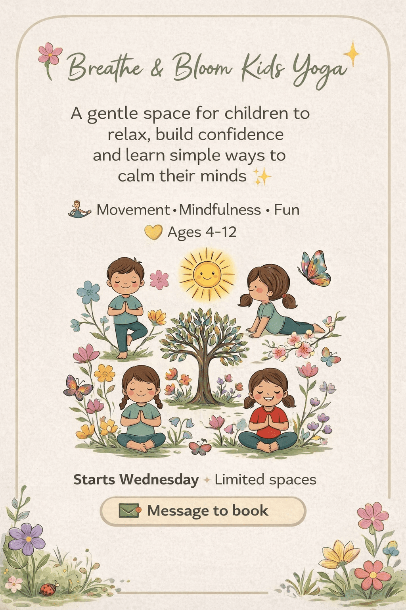

Fun Kids Yoga & Mindfulness Classes
New kids' yoga classes starting in Mallow and Kanturk, North Cork. These classes are designed to help children build confidence, improve focus, and learn to relax and unwind. Ages 4-12, run in 4-week blocks with limited spaces. Send a message to book a spot or for more information: instagram.com/breatheandbloomkidsyoga
View full details →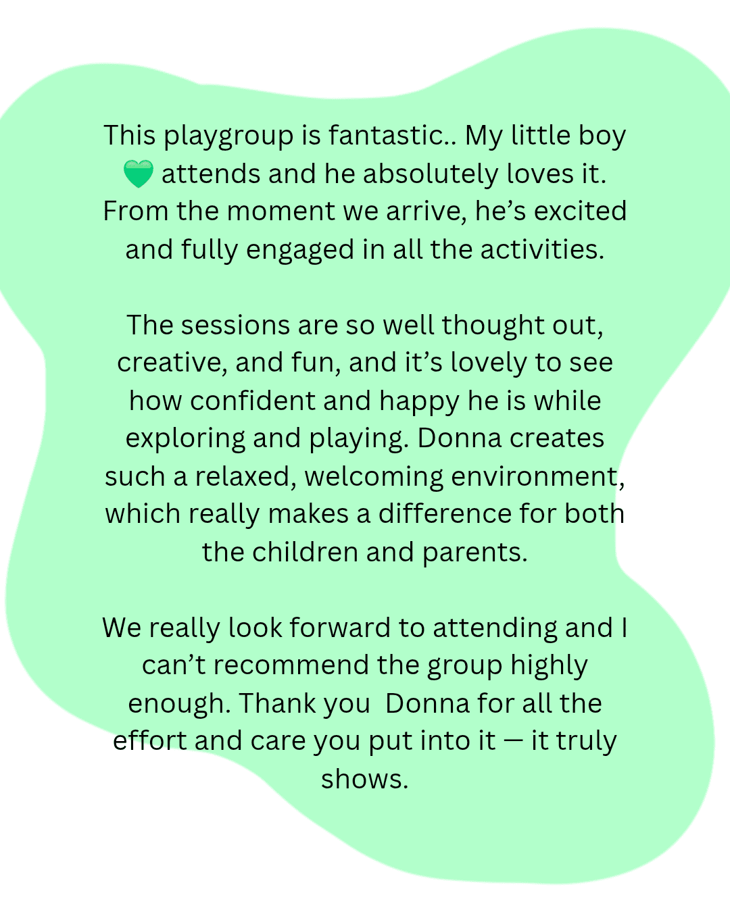

Ickle Minds
Messy and sensory play sessions for grown up and children aged 6 mths to 5 years.
View full details →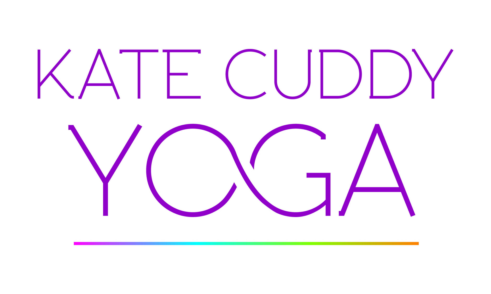
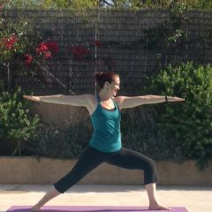
Kate Cuddy Yoga
Yoga classes at Glounthaune Community Centre on Mondays, Tuesdays and Wednesdays, suitable for absolute beginners, more advanced practitioners, teenagers, and new mums with their babies. Benefits include improved flexibility and mobility, increased strength, better posture, and improved balance and coordination, along with relief for back, neck or joint pain. Yoga also supports mental and emotional wellbeing by reducing stress and anxiety, improving focus and mental clarity, boosting mood, and supporting better sleep. Longer term, it encourages a stronger mind-body connection, is accessible to all levels with gentle or challenging options, and offers the structure and social support of a regular class or home practice.
View full details →

Kids & Teen Yoga Classes (Tralee Area)
Weekly Kids & Teens yoga classes in Tralee. A mixture of yoga poses, games, movement, mindfulness, breathing exercises, art and relaxation. Thursday Afternoons at Collis Sandes, Tralee for 5-8 year olds and 9-13 year olds. Saturday Mornings at Banna Leisure Centre, Ardfert for 4-7 year olds and 8-11 year olds. Also providing yoga for preschools, primary and secondary schools, clubs and parties.
View full details →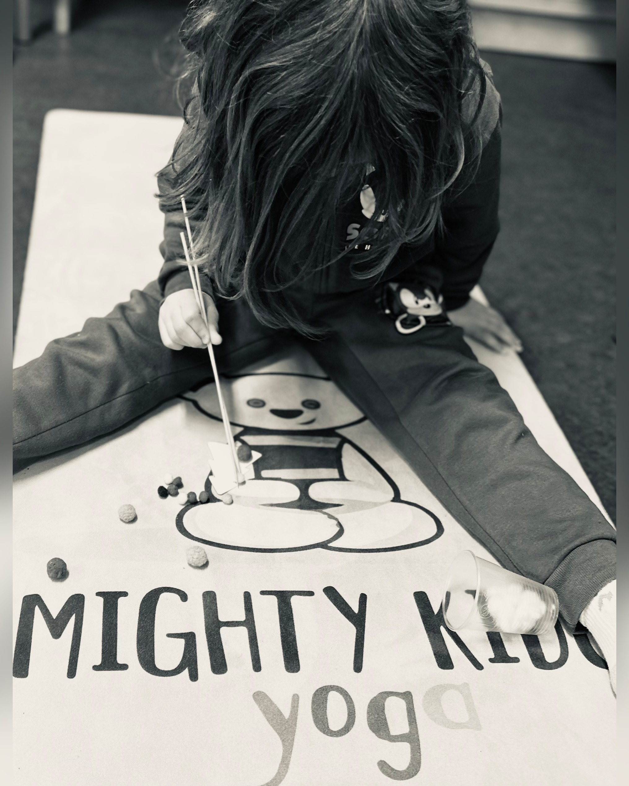

Kids Yoga & Zumbini Combo Class Midleton
Preschool Yoga & Zumbini Combo Class takes place in My Place Midleton on Thursdays from 3.30-4.15pm. The Zumbini portion of the class includes singing, dancing and playing instruments, introducing children to music from various cultural backgrounds with a child-centred, developmentally appropriate approach. The yoga includes age-appropriate themed yoga stories, such as jungle adventures, farm adventures, missions to the moon, and ocean dives, exploring common issues kids experience such as managing frustration, friendships, and separation anxiety through the characters they meet. The stories include visuals and props to aid understanding. The class also includes mindfulness activities, easy-to-follow games, dance, and a little relaxation to finish. The secret ingredient is playfulness, keeping your child motivated, excited and moving, while the classes also work on children's emotional intelligence, provide coping tools, and enhance social skills.
View full details →Parent First Aid Classes – Nationwide
Parent First Aid is Ireland's leading provider of paediatric first aid training for parents and childminders. Parent First Aid was established to offer essential medical emergency instruction at a local level and at times that suit busy family lives. All courses are delivered by vetted, fully qualified and experienced trainers.
View full details →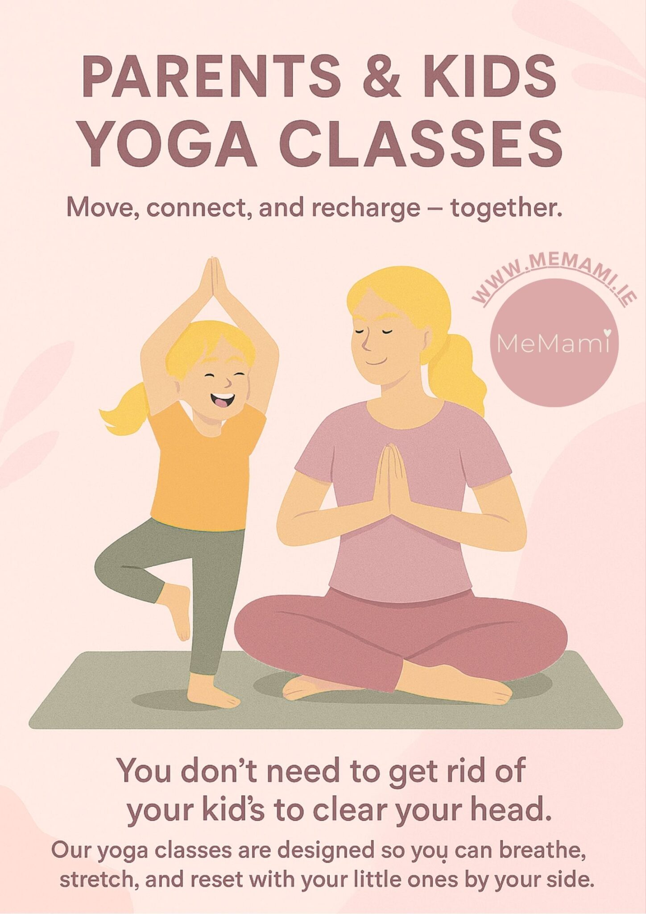
Parents & Children Yoga Classes in West Cork
MeMamí is a new yoga collective in West Cork, where generations learn and grow together through a shared yoga practice. Our family-friendly yoga classes are designed for parents and grandparents who want to stay fit, stretch and relax on a mat while having their little ones by their side. Get ready for a fun-filled yoga experience with your little ones! Let's move, stretch, and connect together as a family, it’s just what you need to lighten up your busy week!
View full details →Baby Health
Baby massage classes taught by an internationally certified instructor. All parents/caregivers are welcome. Each session is 1 hour. Classes in person in Dublin or online, available in English, Spanish or Italian. Baby massage is more than just a soothing practice, it is a powerful tool that nurtures a child's emotional and physical development while strengthening the bond between you as a parent and your little one. It supports relaxation and brain development, soothes teething pain, encourages better sleep, eases digestion and colic, boosts muscle and joint strength, and improves flexibility, circulation and overall physical health.
View full details →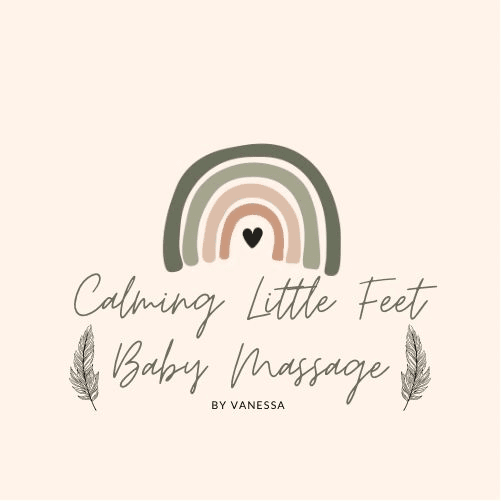
Baby Massage & First Aid
Calming Little Feet offers a 6-week course where you will learn infant massage and the benefits of baby massage, which builds bonding and connection, in a supportive, non-judgemental environment. Gain useful tips and support along the way from a paediatric nurse and mam to 4 children. Everything is provided, just come along with your baby. There are also monthly Daddy & Baby classes on a Saturday, for dads to enjoy some bonding time with baby, and monthly parent/grandparent first aid courses.
View full details →

Baby Sensory Ireland
An educational, interactive and developmental programme which will help your baby learn and develop important skills. Classes are built on your baby's natural play-rest-play cycle to ensure they are not overstimulated. Classes are located in multiple locations across Ireland - please see the website for dates and times. Classes are also run during school term time. An ideal place to meet new parents, ask questions, and share ideas, experiences and memories together.
View full details →

ClapHandies PlayLabs - Dublin
The PlayLabs are weekly developmental sensory play classes for babies, wobblers and/or toddlers. The classes are designed to provide a fun and engaging environment for both children and adults! With music, learning, social interaction, and sensory play, you and your little one are sure to have a great time together. They are also a chance for children to socialise with children of their own age, while offering parents/caregivers the opportunity to get to know others in their area too. Baby PlayLabs (6 weeks - 7 months) - 55 minute class duration Wobbler PlayLabs (8 months - 15 months) - 50 minute class duration Toddler PlayLabs (16 months - 3.5 years) - 50 minute class duration We typically run toddlers at 9.45am/10am, wobblers at 10.45am/11am and babies at 11.45am/12pm - venue dependent. You can check out more information about our classes on our website: https://site.claphandies.com/ In addition to your term's booking, we also offer you 3 months free access to ClapHandies at Home which is an online resource filled with hours of follow-along music and guided playtime videos for you and your little ones to enjoy at home. So if you miss any of your classes during a term, you can run your own PlayLab at home or just tune in to have some extra fun during the week. If you are signing up for our Baby PlayLabs in particular, we also provide you with a link to our informative Baby Massage e-manual so you can continue practising the massage strokes at home.
View full details →

Claphandies
ClapHandies PlayLabs offer babies, wobblers and toddlers (birth to 3.5 years) a chance to play, meet other children and develop new skills. Sessions include music, song and rhyme time, and a class teaching the core baby massage techniques. We also focus on gross motor skills and language development, teaching baby sign language. The weekly classes offer a wide variety of engaging experiences tailored to the needs of each age group, and are also a chance for children to socialise with children of their own age, while giving parents/caregivers the opportunity to get to know others in their area too. Each term runs for 7 weeks, with a 50% sibling discount. Classes are offered in various locations across Ireland.
View full details →Dad and Baby Massage with Melanie Murphy Infant Massage
In-person 5-week Baby Massage Group at The Community Cottage, Lusk, Co. Dublin, K45 VE83. Fridays 10-11.30am. Dates: 8th, 15th, 22nd, 29th November and 6th December 2024. Partners welcome at group. Open to parents and their babies from newborn up to 11 months (pre-crawlers).
View full details →Gentle Hands Baby Massage
Baby massage classes teach parents how to use gentle, rhythmic strokes to massage their babies, promoting bonding, relaxation, and potentially aiding in digestion and sleep. Classes run for 5 weeks. Swords term starts Tuesday 2nd September, 10-11.30am. Howth term starts Thursday 4th September, 10-11.30am. Most health insurance will refund up to €100 depending on your level of cover.
View full details →Koala Cuddle Baby Massage
Baby massage is a gorgeous time to spend some relaxed 1:1 bonding time with your baby. Learn how to massage your baby from head to toe and gain all the benefits: relief from colic, constipation, wind and teething, and support for sleep and bonding. Enjoy a hot cuppa with other mums and share tips, tricks and the ups and downs of parenthood, with a certified infant massage instructor, OT-approved Tummy Time practitioner, nurse and mum of 3. Classes take place at The Park Community Centre, Ballycragh, D24, on Tuesday mornings. Each term runs for 5 weeks, lasting 1-1.5 hours each week. Classes are open for mums or dads to attend with their baby, aged 3 weeks to pre-crawling.
View full details →Messy Adventures
Play promotes physical development, encouraging children to practise their fine and gross motor skills as well as hand-eye coordination. Children are given the opportunity to explore their senses by using their whole bodies and developing these movements. Our classes allow parents and carers to play one-on-one with their children, and also encourage children to learn how to engage in activities independently as well as with other children - all vital skills for their development. We pride ourselves on providing classes which are fully inclusive, warmly welcoming all babies and children. Tuesday: Malahide, 11am (messy play). Thursday: Malahide, 10am & 11:20am (Role Play Village Active). Friday: Swords, 9:30am & 11:15am (messy play). Friday: Raheny, 9:30am & 11:15am (messy play). A 30% sibling discount is automatically applied at checkout.
View full details →Mini Me Massage
Mum & Baby Yoga is a 1-hour class, and Baby Massage is 1.5 hours long. Classes are baby-led. I offer a safe space with an intimate setting for mammies to come with baby and enjoy 1-to-1 time to bond with baby, while meeting other new mammies.
View full details →Mucky Picnic
The most regular Mucky Picnic is on Friday mornings in Kidspace Rathcoole. These run during school terms at 10:15am. No need to book, just turn up ready for mess! Children must not be left unattended. Each class has a selection of sensory and messy play trays to explore, which vary from week to week depending on the theme. Sessions are relaxed and unstructured, so you and your little one can explore at your own pace - a relaxing environment for little ones to play, socialise and be their own unique selves. Just like a real picnic, Mucky Picnic sessions can be taken almost anywhere - sessions also run in libraries, schools, toddler groups, community centres and play centres. Follow us on social media to stay up to date on the latest terms and classes. Let's go on an adventure to make, mess and play together.
View full details →Sensory Workshop for Neurodiverse Children - Balbriggan
Sensory Workshop for Neurodiverse Children: a fun, engaging session providing a safe space for children to explore sensory activities in a supportive environment. Max 8 children per session. Age: 4-10 years. Location: Balbriggan Library, George's Square, Balbriggan, Co. Dublin. Time: runs twice a month, 4-4.45pm. Cost: free. How to book: bookings open at the beginning of each month - email balbrigganlibrary@fingal.ie to secure a spot, and join the email list to be notified when bookings go live, as it's the first 8 each month. Important: parents/guardians must remain in the library during the session - you don't need to stay in the room, but must stay on the premises. Let's create a fun, inclusive space for all children.
View full details →
Toddle Sense
Classes range from 13 months to 4.5 years. From Space to Under the Sea, to an Ugly Bug Ball and a trek in the Jungle, Toddler Sense explores it all. All activities are designed to work on a range of skills and developmental milestones, including hand-eye coordination, gross motor, fine motor, visual stimulation, emotional regulation, exploring the world around us, and social and emotional development, to name a few. A twin/sibling discount is available for all classes, and Baby Sensory graduates can avail of a discount when booking a class within the first 12 months of graduation. Multiple locations across Dublin: Balgriffin Hall, Malahide Road, Dublin; Fingallians GAA Club, Seatown West, Swords, Dublin; Gracepark Educate Together, DCU Campus, All Hallows, D09 KDW4, Dublin.
View full details →Yoni Hearts Club Baby Massage & Mum & Me Yoga
Location: Dublin City, Dublin (locations may vary - contact us through email or social media). Baby Massage: taught by a certified infant massage instructor with IAIM. Time: Fridays, 10.30am-12pm. Everything provided including refreshments - a 5-week in-person course, with an online option for weeks you're unable to attend in person. Mum and Baby Yoga: course/drop-in if available, light snack provided after class. Time: Tuesdays, 10.30-11.30am.
View full details →Elmm Infant Massage Castledermot
Baby Massage classes in Teach Diarmada, Castledermot, Co. Kildare. Running for 5 weeks, each Thursday. Newborn to pre-crawling age (baby and one parent or caregiver can attend).
View full details →Happy Peeps Sensory Play
Location: Leixlip Youth & Community Centre. Time: 10.30-11.30am. Children have the opportunity to regulate, engage in messy play and express themselves in a safe and supportive environment with smaller group sizes. Classes are child-led, relaxed, and full of fun and things to explore. Caregivers such as parents, grandparents and childminders can attend and are required to stay for the duration of the class. Bring a spare change of clothes and a small towel/baby wipes. I also run Babies & Toddlers Sensory Play in a different location - keep an eye on our Instagram page for location updates, where you can also book, or contact Vicky on 0857377109 for any questions.
View full details →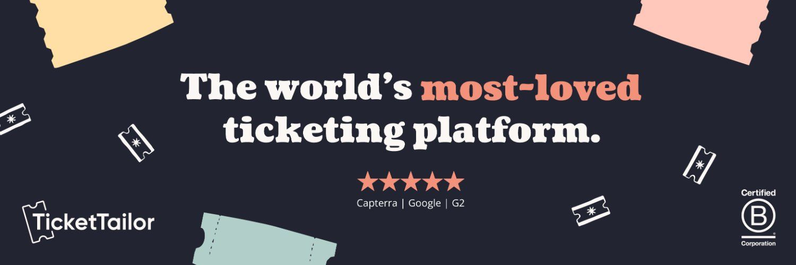
Bumps & Bainne Baby Massage Classes
Join Aoife for a gentle and nurturing baby massage course designed to help you bond with your baby while learning a valuable skill that can support relaxation, sleep, digestion and communication. Over the course, you will learn a full baby massage routine, techniques to help with common discomforts such as wind and constipation, and how massage can support your baby's emotional and physical wellbeing. Classes are baby-led, relaxed and welcoming, with plenty of time for feeding, cuddles and nappy changes whenever needed. As well as learning massage techniques, you'll have the opportunity to connect with other parents and caregivers in a supportive environment. Thursdays, 10-10.45am, Redeemer Family Resource Centre, Dundalk. Baby massage classes are suitable for babies from approximately 6 weeks of age until they become actively mobile. Mums, dads, grandparents and other primary caregivers are welcome to attend with baby - one adult attends with each baby, and the attending adult must remain with their baby for the full duration of the session. Please bring a towel or blanket for your baby to lie on, any feeding supplies you may need, nappies and wipes, and a spare change of clothes for baby. Babies should wear comfortable clothing that is easy to remove for massage; massage oil will be provided. Please don't worry if your baby sleeps, feeds, cries or needs extra cuddles during class - baby massage is always baby-led, and you're welcome to follow your baby's cues throughout the session.
View full details →Baby Massage With Laura
Baby massage classes with a PICU/NICU nurse, in 2 locations: Navan and Wilkinstown. Come meet other parents and bond with your baby in a relaxed and calm environment. Every class is followed by tea/coffee/a sweet treat, giving time to chat and get to know other parents. All babies welcome, 0-12 months. Babies with additional needs, complex needs, or life-limiting conditions are welcomed and encouraged to attend, with plenty of space for medical equipment such as portable ventilators, suction machines, and feeding pumps. Massage can be adapted for all needs, e.g. stoma bags or feeding tubes. As a PICU/NICU nurse, I'm very experienced in caring for babies with additional needs and their families. 1:1 classes also available. Currently Monday mornings at Wilkinstown Community Centre, 10am, and in Navan at the Red River Yoga Studio on Wednesdays at 10am (check socials in case time/location changes).
View full details →

Pregnancy/Post-Natal Pilates
We are a physio and pelvic health clinic in Navan with a studio offering a range of classes, including Post-Natal Pilates: geared to those who have had their baby, this class is tailored to improving pelvic ligament stability after the birthing process, and you can continue in this class for 1-2 years after labour. We also offer Baby Massage Classes: meeting once a week for 5 weeks, designed for parents, grandparents and other caregivers with their babies, ideally from birth to pre-crawling. Participants massage their babies while being guided through a step-by-step massage routine, with individual attention for each participant. Classes include relaxation techniques and talks on issues such as crying, sleeping and baby emotions. All participants receive handouts, massage oil and refreshments.
View full details →Touch Therapies by Aimee
This is a small, baby-led class that provides a relaxed, calm environment for both parent and baby to embrace a bonding experience through nurturing touch and infant massage, while following and tending to your baby's cues. Suitable from birth to pre-crawling. Each week we learn the strokes of a new body part and go back over strokes learnt in previous weeks, along with learning about the different benefits of baby massage and how to grow massage through the ages. We then enjoy a cup of tea or coffee while discussing a new baby/parent-related topic each week. As well as benefits for babies, such as aiding digestion, nurturing touch, and easing constipation and teething, the class also benefits parents, such as getting to know other parents in the local area, building a supportive community, and picking up tips, advice and ideas along the way of your parenting journey. Location: the class runs for 5 consecutive weeks and is held in Johnstown, Navan. Classes run on Wednesday/Friday.
View full details →www.birthandbaby.ie
Join Jen from birthandbaby.ie for Baby Massage or Baby Yoga in Dunshaughlin Co. Meath. Classes run on Thursday mornings. Baby Massage is suitable from birth to 12 months and Baby Yoga is suitable from 3 months - 12 months. All booking details can be found at www.birthandbaby.ie
View full details →Gentle Start Collective
A range of movement classes for babies, toddlers, and parents and caregivers. Nothing special needed for the class, just good vibes.
View full details →Love Life Nurture Doula and Baby Massage
My classes are based in Wicklow Town and are a small group of around 5 to 6 moms which makes for a nice intimate class where everyone can really get to know each other. The class starts at 10:30am and runs for about 90 min. It's a really relaxed baby led class (baby is the boss). I will provide everything you need (oils, handouts, blankets, tea/coffee and treats). The layout is as follows: Introductions followed by baby massage strokes. Discuss different topics on baby massage including massages for the relief of colic/wind, benefits of infant massage, how to read your baby’s cues etc. We have a tea/ cake break and photo opportunity. Then we discuss other parenting topics either picked by me or someone from the group. The 6th week is a coffee date in town.
View full details →Wellness by Meadows
Our Baby Massage Classes usually run for a 5-week term, Wednesday mornings, 10-11.30am, here at Wellness by Meadows, just outside Tinahely, Co. Wicklow, Y14 VY70. Baby massage provides numerous physical, psychological and emotional benefits for babies and their families. Each week you'll learn different massage strokes that can help relax and soothe your baby, aid digestion to relieve wind, colic and constipation, help baby sleep well, and teach your baby body awareness. Your baby will also enjoy the songs and rhymes throughout the class. Connecting with other parents in these classes is another big plus, with time for a cuppa and chat at the end of each class. Class sizes are kept small. We can also accommodate 1:1 classes, both parents attending together, and grandparents may also like to attend - we cater for babies with special needs too. Handouts and oil are provided, and I recommend wearing comfy clothes for you and baby - just bring whatever you usually bring with your baby and a warm blanket to wrap baby in. Classes are baby-led, with lots of time for feeding, changing and the occasional nap. Course investment is €120 for the 5 weeks (you can also claim back most of the cost through your health insurance policy, depending on your plan).
View full details →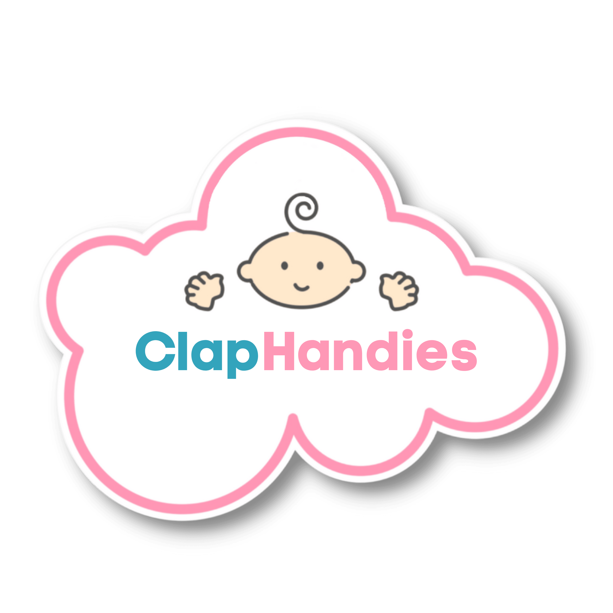
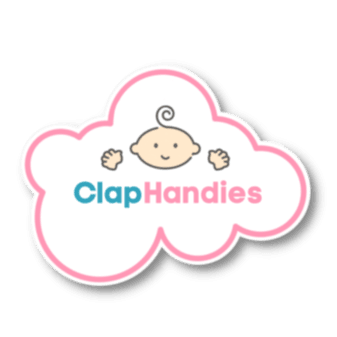
ClapHandies
Weekly PlayLab sessions of music, rhyme, baby massage technique, sign language and sensory play for babies, wobblers and toddlers, with parents actively encouraged to join in.
View full details →

Active Mum .ie
Spend quality time with your baby - learn how to give your baby a massage, and meet other local mums for friendship and support. There are 3 classes on offer: Baby Massage, Story Massage & Sensory Play, and Massage in Schools.
View full details →Chatterparrot
Chatterparrot was set up to provide babies, toddlers and their grown-ups with a friendly space to boost bonding and communication from birth, through baby sign language. The classes use a mix of songs, stories, sensory play and baby sign to focus on interaction and learning those early words. The class is run by Helen O'Sullivan, a qualified language teacher and linguist, passionate about bringing the joy of language to little ones and giving parents some precious play-time with their babies. There are classes in Rathmines, Kilternan and online - find your best class on the website.
View full details →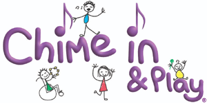
Chime In And Play
At Chime In And Play (formerly Gymboree), you and your child will build creativity, confidence and lifelong friendships through baby & toddler sensory play, music, art, sport, and baby massage. Their classes, suitable from birth to 5 years, encourage development through play and learning designed to support your child's growth at their individual pace. From sensory stimulation to problem-solving games and storytelling, Chime In and Play use play-based activities to stretch the body and mind. With locations all across Dublin, find your local class on the website.
View full details →

ClapHandies PlayLabs
If you're seeking joyous, playful classes for your little one, ClapHandies PlayLabs deliver in spades. Designed for babies, wobblers, and toddlers (birth to around 3.5 years), every session blends music, movement, sensory play, rhyme, and storytelling, creating moments of connection and discovery. At the helm is Liza Crotty, the dreamer and doer behind ClapHandies. With more than 15 years of guiding Dublin families into playful learning, Liza infuses every class with heart, creativity, and infectious energy. We adore ClapHandies because, under Liza's vision, play becomes poetry, parent-child bonds deepen, and early years are filled with wonder, laughter, and very happy toddlers.
View full details →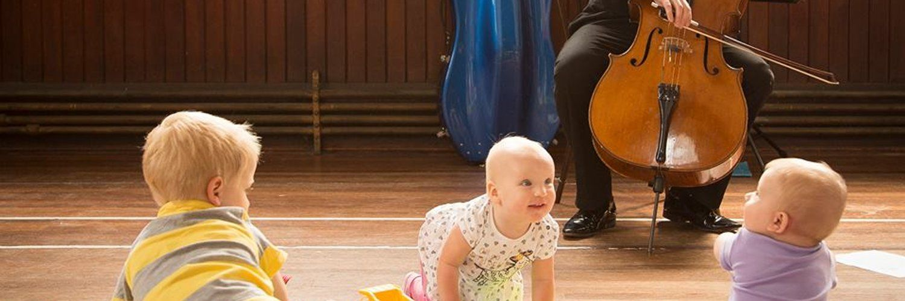
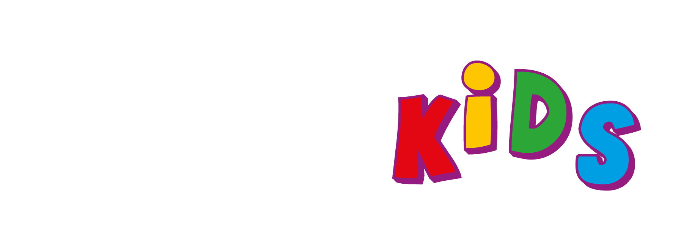
Classical Kids
Relaxed, affordable, accessible classical music concerts for parents, children, toddlers and babies in community settings. Founded by musicians Aura Stone and Sylvia Roberts, Classical Kids believe interacting in a natural way, whether that's dancing, making a noise, or playing, is key to absorbing all that the world of classical music has to offer. They have play-mats, colouring, toys and music worksheets to facilitate this musical journey. Suitable for ages 0-3 years. Regular concerts take place across Dublin - find your nearest musical feast online. And if your child falls in love with classical music, Classical Kids have their own Spotify playlist for you to enjoy in your own space.
View full details →It’s a Small World
Little hands, big imaginations - where every visit is a new adventure: helping pets, building dreams, growing gardens, and taking the spotlight.
View full details →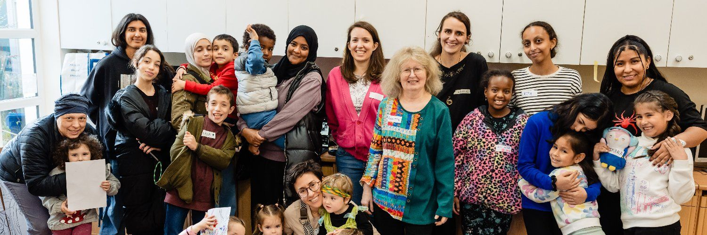
Language Explorers Workshops (For families with children 3 to 6 years old)
Language Explorers is Mother Tongues' programme, designed for children aged 3 to 6 and their families. Facilitated by our specially trained multilingual artists, the Language Explorers workshops create a welcoming space for families from all linguistic and cultural backgrounds. Each session invites children and their adults to connect with their language(s) through storytelling, play, visual arts, music and movement. Our artists create a space full of imagination and creativity, in which speaking and listening to languages is fun and something to be proud of. Families take part in high-quality artistic activities while sharing and exploring the diversity of languages in the room, inspiring multilingual families and those curious about other languages and cultures. Workshops are delivered in English, and families are warmly encouraged to bring any and all languages they speak. Whether your child is fluent, just starting to learn, non-speaking, or communicates in a different way, this space is for you. View upcoming family workshops: https://mothertongues.ie/language-explorers-early-years/
View full details →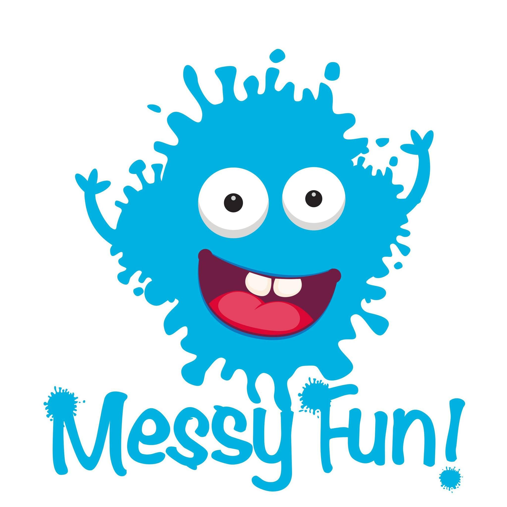
Messy Fun
Messy Fun is a sensory play class designed especially for babies and toddlers that gives children the opportunity to experience a wide range of sensory experiences. Prepared solutions such as fingerpaint, slime and gloop give children a wonderful opportunity to experiment with different textures and materials. During messy play, babies and toddlers develop eye-hand coordination and fine motor skills - what looks like a mess on the surface is truly a learning experience for your child. For adults, messy play can be a lot of work and feel stressful, but early childhood education experts say that play is the work of the child, especially for babies and toddlers - don't be afraid of the mess, roll up your sleeves and enjoy some messy play time with your little one. Keep an eye on Messy Fun's social media pages for themed events throughout the year (Halloween, Easter etc.).
View full details →National Gallery of Ireland
Admission is free. The National Gallery of Ireland, right in the heart of Merrion Square, is a brilliant stop for families. Entry is free, and kids will love wandering through the bright galleries filled with colourful paintings and fascinating portraits. The gallery also runs creative workshops and family-friendly tours, making art feel accessible and fun for all ages. The Early Years, Children and Families Programme plays a major part in encouraging learning through art at the National Gallery of Ireland. This programme is for all the family, from babies and toddlers to younger teens and their parents/guardians, embracing play, enquiry, problem solving, independent thinking and collaboration through multi-disciplinary sensory activities responding to the national collection. The programme includes general activities on site for everyone, from seasoned museum visitors to tourist families on holiday. The gallery offers drop-in workshops, tours and activities, all with a family focus. The Atrium Creative Space is open every day, and free art packs are available. There are also scheduled workshops and events, designed with age-appropriate learning in mind. The gallery is currently developing an online strand for Early Years, Children and Families, which aims to take learning through art out of the gallery and into the home. After your visit, you can pop across to Merrion Square Park for a run-around - the perfect mix of culture and playtime.
View full details →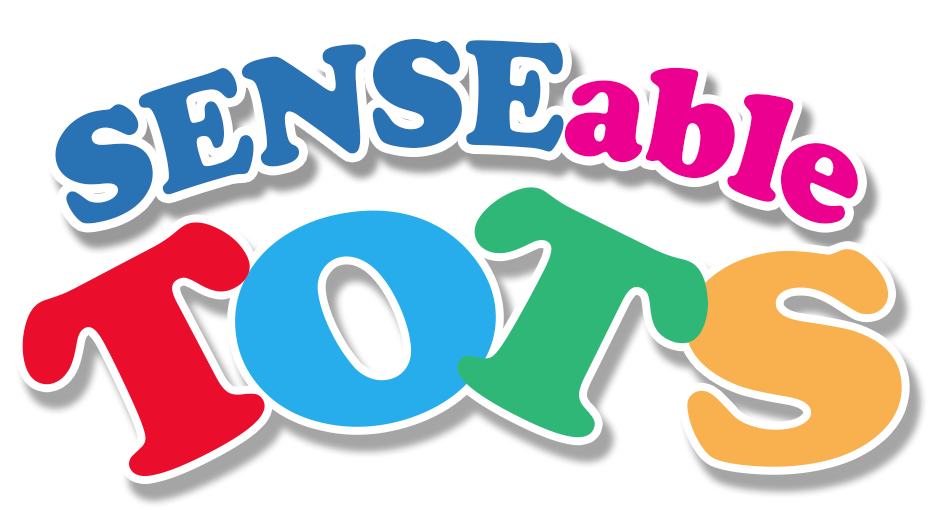

SENSEable Tots
SENSEable Tots are programmes of teacher-directed lessons which use sensory materials to help your children explore the use of their most important inborn instincts, the five senses of touch, smell, hearing, taste and seeing. These lessons will also encourage your children's learning and development in accessible, fun ways, through songs, play, crafts and active games. Classes are approximately 40 minutes long and are suitable for children between 6 months and 3.5 years old. Classes are held in Shankill and Greystones.
View full details →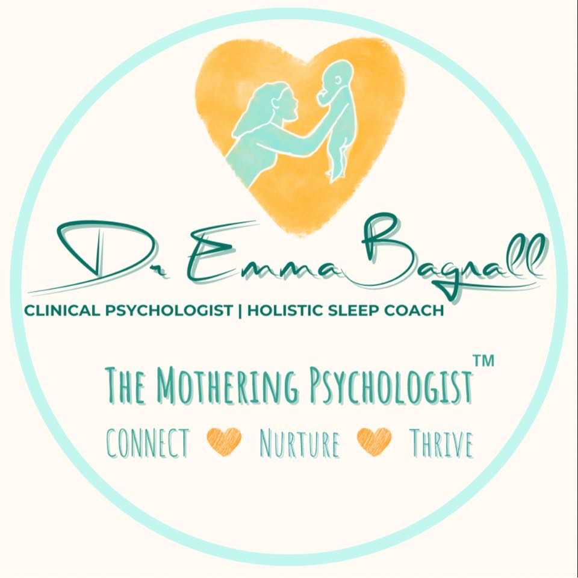
The Mothering Psychologist
Dr Emma Bagnall combines child psychology, maternal wellbeing support, and sleep consultancy, offering holistic care for both parent and child.
View full details →

Toddler Sense
Toddler Sense is a world of sensory stimulation, play, fun adventures and learning for your toddler - the follow-on programme from the award-winning Baby Sensory. Classes range from 13 months to 4.5 years. Come and help Jennifer and Todd on their mission to learn all about Planet Earth through adventure play, songs, music, puppet shows, light shows, bubble shows and much more - a magical journey of imagination and learning about the world around us. Each week has a different theme, from Space to Under the Sea, to an Ugly Bug Ball and a trek in the Jungle, so there's plenty to see and do. All activities in the class are designed to work on a range of skills and developmental milestones, including hand-eye coordination, gross motor, fine motor, visual stimulation, emotional regulation, exploring the world around us, and social and emotional development, to name a few. With 3 locations in North County Dublin, find your nearest class on the website.
View full details →Chime in & Play
Various locations, dates and times - see website for more information. Some venues operate a summer term/classes. You and your child will build creativity, confidence and lifelong friendships. Our classes are specially designed to help young children learn and develop through playing and music. Our classes also help you learn about your child, how to participate in and encourage their development, while enjoying the simple pleasure of playing together.
View full details →Little Lullabies Baby Massage
5-week Baby Massage in New Oak Community Residence, Carlow. 10.30am-12pm approx, every week. Baby massage has many benefits, helpful for digestion, colic, sleep, and bonding. All supplies provided - cushions, handouts, oil etc. Just bring baby and enjoy 1-on-1 time together.
View full details →The Wriggles and Giggles
Our classes typically involve a structured class of singing, rhymes, dancing etc, led by the class teacher; stimulating light displays with hands-on 'touch' experiences; a little photoshoot opportunity; and free play with a selection of Montessori toys. Keep up to date on our classes and locations in Carlow & Kilkenny through Instagram.
View full details →Baby Massage with Orla
Baby massage classes in Cavan town, at The Backyard, Moynehall, H12 W5D4. Wednesdays, a 5-week block, 10-11.30am. Mum, dad, or grandparents welcome to come with baby, but we ask that only one person and baby attend each class. A dads' baby massage workshop will be announced soon.
View full details →Kingscourt Mum and Baby Group
Kingscourt New Mum and Baby Support Group in Cavan welcomes new and expecting mothers to meet up, share experiences and create new friendships. It takes a village to raise a child, so why not join this group and meet some new friends over a cup of tea? The group also runs baby massage/reflexology classes at times. Location: Kingscourt Community Centre, Dunaree, Kingscourt, Co. Cavan. Time: every 2nd and 4th Tuesday of the month, 10-11.30am. Cost: €3 per family. Contact: Berniece on WhatsApp, 0871860352.
View full details →Baby Massage Class in Shannon Co Clare
Brand new Baby Massage Classes, led by a Certified Infant Massage Instructor, are starting in the Family Resource Centre in Shannon, Co. Clare - perfect for babies from birth to pre-crawlers. The term runs for 5 weeks, with classes usually lasting about an hour and a half, including time for tea/coffee and chats at the end. It's a great way for moms to socialise with other new moms, sharing tips and tricks. Classes are baby-led, so no need to worry if baby cries, needs a feed/change, or just needs a cuddle - these classes are extremely relaxed. Stay up to date on social media to hear about upcoming classes and locations.
View full details →Baby Massage Classes Newmarket on Fergus
Baby massage is a way of communicating with your baby through a nurturing and loving approach. Infant massage is a gentle medium, following a simple massage routine that's adaptable to each family's own needs and wants. In my infant massage classes, your CIMI (instructor) demonstrates the massage movements on a doll while you massage your own baby, guided step by step in a relaxed and friendly environment, so you can continue to massage your infant for years to come. Babies who are massaged tend to sleep better and get relief from growing pains, muscular tension, teething discomfort, gas and colic. It also increases relaxation and reduces stress levels by stimulating the anti-stress hormones oxytocin and serotonin, for both parent and infant - a wonderful way to spend time with your baby. Classes run over 5 weeks. Stay up to date with new terms through our socials. Location: Harmony House, Newmarket-on-Fergus. To secure a place, contact Siobhan on 086 855 2307. With nearly a decade of teaching baby massage, you can be confident you're in safe hands.
View full details →Sense of Wonder Sensory Play
Welcome to Sense of Wonder Sensory Play. Our sensory play sessions are more than just fun - they're a powerful way to support your child's development and learning. Through hands-on exploration, babies and toddlers develop essential fine motor skills, hand-eye coordination, and problem-solving abilities. These sessions also stimulate cognitive growth, encourage language development, and build social skills through interactive play. Sensory play ignites curiosity, fosters creativity, and lays the foundation for lifelong learning. Let's dive into the mess and watch your little ones grow! Follow us on Facebook and Instagram.
View full details →BabyGrá - Baby Massage & Yoga Cork
A space to slow down, connect, and nurture: a 5-week Baby Massage Course designed to help you relax, bond, and connect with your little one. You'll learn gentle massage techniques to support deeper, more restful sleep, ease tummy discomfort and colic, and strengthen your bond through loving touch. Each course includes organic baby massage oil, a parent's manual with all strokes and routines, and mats and a cosy setup. Location: Croí Wellness Studio, Blackpool, Cork.
View full details →Little Learners Holistics
A safe group for mothers to learn more about wellbeing for mothers and babies. Baby massage is more than just touch - it's bonding, confidence, connection, and community. Come join us for gentle moments with your baby and a supportive space for you. Led by an Infant Massage Instructor (IAIM), Mother and Baby Wellbeing Facilitator, and Kids Yoga Instructor. Locations: Forrest Hall, Mitchelstown; Ganapati School of Yoga, Mallow; Gealach Grá Yoga Studio Chair; and Fermoy Community Youth Centre.
View full details →Toddler Sense Cork
Our classes are parent led so it’s a great opportunity to have some special time with your toddler. If you can’t make a class then why not ask a grandparent or childminder to bring them along!
View full details →Bloom Baby Classes North West Ireland
Bloom Baby Classes Bundoran offer gentle, research-based baby development sessions designed to support bonding, early learning, and sensory exploration. Each week introduces new themes, songs, activities, and opportunities for connection with other parents and caregivers. Any primary caregiver is welcome - mum, dad, grandparents, guardians, or trusted caregivers - and siblings can attend if the class allows (please message to confirm). Caregivers must stay for the full duration of the class to support their baby, join in with activities, and ensure safety. Babies should wear comfortable clothing suitable for movement and sensory play, and you may bring a blanket or small mat for baby to lie on (optional); for Caterpillar Club, massage oil can be provided, or caregivers may bring their preferred baby-safe oil. Caterpillar Club (6 weeks-6 months) is a calm, nurturing class for younger babies focusing on early bonding, baby massage, gentle sensory play, and age-appropriate developmental activities - perfect for pre-sitters. Busy Bees (6-15 months) is a more active, engaging class for babies who are sitting, moving, or exploring, including music, sensory play, early movement activities, and opportunities to practise emerging developmental skills in a safe environment. Location: Bundoran Community Centre. Weekly sessions on Wednesdays: Busy Bees, 10.30-11.15am, and Caterpillar Club, 11.45am-12.30pm.
View full details →Carndonagh Inishowen Toddler Group and More - Spraoi agus Sport
Spraoi Agus Sport offers a range of facilities to families in Carndonagh, Inishowen, Co. Donegal. The Parent and Toddler Group runs multiple times a week, perfect to work around schedules - parents and their young children are encouraged to come along to this fun and relaxed 3-hour session, with a multitude of toys available for the children while mum, dad or carer gets a chance to have a well-deserved cuppa. Location: Ray Community Centre, Co. Donegal, F92 CD70. Monday, 11am-1pm (term time); Tuesday, 10am-1pm; Thursday, 10am-1pm (term time); Saturday, 10am-1pm (term time). Cost: €5 per family, bookable and payable online for one or multiple sessions. Contact: info@spraoiagussport.ie. Keep an eye on social media for when the group starts back up after school holidays, as it may not always align with term time. Classes and groups for babies to preschoolers include music parent and toddler classes, baby massage, and breastfeeding support. Spraoi agus Spórt also supports children with a disability and/or autism, along with their parents and siblings, hosting quarterly meet-ups for parents and encouraging them to attend parent and toddler groups and classes with their child - a fully resourced sensory room is available for families to use during the week or at weekends. Parent workshops cover topics including weaning, behaviour management, potty training, and paediatric first aid. Classes and groups for kids aged 5-15 include creative writing, sewing/crochet, guitar lessons, and gaming.
View full details →Baby Massage Oranmore
Small group classes available, running weekly for 5 weeks in Oranmore. Duration: 1.5 hours. Baby-led classes, suitable from birth to active crawler. 1:1 classes also available.
View full details →Baby Massage with Kathryn
Hi there, my name is Kathryn and I'm a Certified Infant Massage Instructor (CIMI). I run classes in Portumna, Co. Galway, and Nenagh, Co. Tipperary, for babies from newborn to crawling. Come, relax and enjoy some 1:1 time with your baby and other parents - learn new skills, bond and unwind in a welcoming, baby-friendly environment. Beverages and snacks provided. Booking is essential. It's €120 for a 5-week block of classes (most, if not all, of this is redeemable through health insurance). DM or message 0857207677 to secure your spot, as they fill up quickly - I'll hold a place, but when slots are full, a deposit is required to secure a space for that block of classes. I also provide 1:1 classes, taught over 3 weeks for the same price, and recommend individual classes for babies with colic or other specific needs before attending a group class. Please note, colic must be diagnosed by a medical doctor prior to commencing massage for colic. If there's anything you're concerned about, please don't hesitate to contact me.
View full details →Galway Community Circus
Galway Community Circus was created to meet the needs of our local youth by offering a non-competitive, physical and creative activity in a safe and welcoming space. Our philosophy is 'circus for all', and we use the circus arts to teach young people, including those who are disadvantaged, at-risk and vulnerable, the tools to develop self-confidence, resilience and social skills while tapping into strengths and hidden talents. Circus classes offer something for everyone to enjoy and are suitable for all ages, levels and abilities. We offer multiple classes for ages 1-17 years (and adults 18+ too). Our main location is in Shantalla on Galway's Westside, but we also offer classes in Renmore on Galway's Eastside, as well as in Tuam. We offer Toddler Circus classes for ages 1-4 years with an adult on Mondays, Thursdays and Saturdays in Shantalla, and on Fridays in Renmore - adults are welcome to participate but not required, though they must stay in the class. We offer Family Circus classes in Shantalla on Saturdays for ages 4+ with siblings who can be younger or older; adults are expected to participate in this class, a fun activity for the whole family. We also offer tea, coffee and social time before and after our Toddler and Family Circus classes. Our Youth Circus programme features weekly classes for different age groups: 5-7 years, 8-11 years, and 12-17 years - in these classes, parents/caregivers are not allowed to stay. At our Shantalla location, we offer youth circus classes for ages 1-17 years; at Renmore, ages 1-12 years; and at Tuam, ages 5-12 years. All classes run alongside the school year from September to June, on different days depending on the class, and we also offer week-long summer camps by age group. Participants should wear comfortable clothes, bring a water bottle, and wear grippy socks if they have them. Classes vary in price based on age group and length, and for 9 months of classes, fees are paid via a monthly subscription; some classes offer trials. Check out all our classes at https://www.galwaycommunitycircus.com/
View full details →Lasting Touch Baby Massage
Baby massage classes in Athlone, Ballinasloe and Craughwell, facilitated by a registered midwife/certified infant massage instructor. Ballinasloe classes: every Thursday, 18th June-16th July, 10-11.30am. Athlone classes: every Friday, 19th June-17th July, 10-11.30am. Craughwell classes: every Wednesday, 1st-29th July, 10-11.30am. Up to €100 redeemable with health insurers. Tea/coffee and a sweet treat provided - a lovely opportunity to bond with your baby and meet other mums in the area. Group classes are limited to one parent and one baby per booking. Private classes are available in your own home if additional parents or children would like to be present. Contact Emily for more info and to book. Instagram: @lastingtouch_babymassge. Email: lastingtouchbabymassage@gmail.com
View full details →The Unrelated Auntie- Messy Play Group (facilitated by a play therapist)
An hourly slot of messy play for different age groups, based in North Kerry - a great opportunity for parents/carers to have some 1:1 playtime with their little ones. This is not a drop-off class, and parents/guardians are required to stay; tea/coffee available. A great social opportunity for both children and for parents/carers to meet and chat with other adults.
View full details →Ready Steady Play Midlands
Our child development experts and play leaders create a unique experience weekly, encouraging early learning and development. In class we pride ourselves on forging a sense of community where parents and caregivers build personal connections and lifelong friendships, with classes throughout the Midlands. Through socialisation, your child will explore and discover the world around them. Our classes are great fun for parents, caregivers and children alike to share together in the vital first five years. Each week you and your little one will go on a new play and musical adventure into the rainforest, under the sea, practising circus skills, and many more, with over 30 themes to explore during the year. Our Sensory Baby Play classes are suitable from newborn to pre-walkers, while our Toddler Play classes are suitable for pre-walkers to 3.5 year olds. Classes run 6 days a week across the Midlands: Athlone, Mondays & Saturdays; Mullingar, Tuesdays & Wednesdays; Portlaoise, Wednesdays & Thursdays; Tullamore, Thursdays & Fridays; Naas, Fridays.
View full details →Gentle Beginnings Baby Massage Kilkenny
Our baby massage classes are a lovely, calm, warm, welcoming and relaxed place to be with your little bundle - a lovely chance to have quality time with your baby. Baby massage techniques are demonstrated using a doll while you massage your baby, and you'll be given a copy of the strokes to take home. Baby massage is a gentle blend of massage, reflexology and baby yoga. Each class runs for about 1.5 hours over 5 weeks, and is suitable from birth to pre-crawling. We'll chat about relevant baby topics, and you'll meet other parents and have a chance to swap ideas and tips. Tea/coffee and cake are included at the end of class, a lovely way to finish up. Thursdays, 11.30am, The Smithland Centre, Loughboy, Kilkenny. Certified IAIM instructor.
View full details →The Wonder Years Play & Mindfulness
Join The Wonder Years Play & Mindfulness for a four-week block of messy play classes, suitable for kids aged 9 months to 4 years old. You can find us in The Scouts Den in Kilkenny. Classes are term-based and usually run on Friday, 10.30-11.30am. Stay up to date through our social media.
View full details →Baby Massage in Portlaoise with Oxana Murray
A 5-week baby massage class in Portlaoise for infants aged 0 to 12 months. Learn gentle massage techniques, enjoy time with your baby and other like-minded parents in a supportive and calm space. Limited places available, so booking is essential.
View full details →Edel's Baby Massage in Portlaoise🌈
Physiotherapy-led infant massage classes. A 4-week block running in Portlaoise Parish Centre, suitable from 0-12 months. Organic oil and class materials provided. Supported by leading health insurance providers. DM @edelsmassage on Instagram or WhatsApp 087-6982073.
View full details →Midwife For You
A relaxed 5-week Infant Massage course where parents learn gentle massage techniques to support their baby's development, relaxation and bonding. Each week we focus on a different area of baby's body, while also covering techniques that may help with common issues such as wind, colic, constipation and supporting better sleep. Classes are baby-led and relaxed, with plenty of time for feeding, settling and chatting with other parents. Classes take place in a private studio in Ballyhyland, Co. Laois, and are suitable for newborns to pre-crawling. Mums, dads, or caregivers such as grandparents are welcome to attend, and caregivers stay for the full class and learn the massage techniques with their baby. Please bring a towel or blanket for baby to lie on; babies should wear comfortable clothing that is easy to remove for massage. Massage oil and an information booklet are provided. Classes are facilitated by a registered midwife and certified infant massage instructor.
View full details →The Wonder Years Play & Mindfulness
Did you know I'm a Tummy Time Practitioner? I adore these sessions - come join us for an interactive workshop for babies and caregivers and learn how to incorporate tummy time into play. Tummy Time & Sensory Play Session for babies aged from newborn to approximately 6 months old (not yet crawling). Enjoy a cuppa and a chat afterwards, and an opportunity to meet other parents.
View full details →Butterfly Bambino’s - Baby Massage
Parents/caregivers get the opportunity to bond with their baby, learn massage strokes/tummy time positions, and have a cuppa while chatting with other caregivers/parents. These baby massage classes are suitable from birth to pre-movers. Classes are approximately 1.5 hours long and currently run on a Thursday morning at the Ballyneety Hub, Limerick.
View full details →Your 4th Trimester
Life with a new baby can feel overwhelming, even when everything is 'going well'. This 6-week 4th trimester course is designed to support you through those early weeks with your baby, gently combining baby massage & yoga, feeding & newborn care support, babywearing guidance, postnatal recovery and nutrition, and a calm space to ask questions and feel supported. You'll leave each class feeling more confident, more connected, and less alone. Location: The Crescent Shopping Centre, Limerick.
View full details →Longford Baby Massage
Baby Massage in Longford is the perfect class to learn baby massage and all the benefits it can help with, including better sleep and better digestion. It's a perfect time to bond with your baby and meet other new parents too. Suitable for babies aged 7 weeks to 6 months (pre-crawling). IAIM registered instructor with 15 years' experience. Note: there is no social media for these classes, but they're usually posted on the Longford Community Mothers Facebook page. Location: The Family Centre, St Mel's Rd, Townparks, Longford (behind Longford Cathedral). Contact: ccorcoran@westcd.ie / 0860442354. Time: usually Thursdays at 11am (check when the next term starts). Cost: €25 for 4 classes.
View full details →Elaines Gift of Touch
This space offers nurturing support for families through pregnancy massage, infant massage classes, parent and child massage classes, postpartum doula care, and Mum's Haven support circles for expectant and new mums. Classes include infant massage for parents and babies, dad and baby massage classes, and parent-child massage classes for ages 2-3 and 4-12 years through the Massage in Schools Programme (MISP). These sessions encourage bonding, relaxation, emotional regulation, and positive touch in a safe, respectful environment. Sessions take place locally, with times and locations shared when booking or advertised for upcoming groups. Caregivers are warmly welcome to attend, including mums, dads, grandparents, or guardians, and must stay for the full duration of the class, as these are shared connection sessions between adult and child. Children should wear comfortable clothing, and parents may wish to bring a small blanket or mat for baby massage classes - massage oil and guidance are provided. Mum's Haven circles offer a gentle, supportive space for expectant and new mothers to rest, connect, and feel supported within the community.
View full details →Messy Tots for Little Ones
Toddler classes (1-4 years) in Co. Mayo - visit my Facebook page 'Messy Tots for Little Ones' to find out about class times and locations. Parents must stay with their child. Bring tissues and clothes to change into, as the classes can be messy.
View full details →Mini Messers Sensory/Messy Play Classes
Mini Messers runs classes mostly in Belcarra Community Centre but will progress to larger towns later in the year for pop-up classes in Mayo, usually at 10am. Check out their Instagram posts and booking links for class locations and times.
View full details →elainesgiftoftouch
As an instructor, my job is to teach parents/caregivers all the massage strokes and techniques on my doll. These classes can be done in group bookings or in a 1-on-1 setting for parents/caregivers to carry out on their own infant. You can claim back up to €100 of the course through your health insurance - check with your provider to see if you're eligible. Courses run for 5 weeks. Book a Buddy Pass: have a friend or group you'd like to book in with? Get a discount off our 5-week course with the Book a Buddy Pass and learn together.
View full details →Playful Páistí
Playful Páistí runs monthly sensory play classes. Follow @playful.paisti on Instagram to keep up to date with themes, dates and availability. Usually Saturdays, 10-11am, in Greenan's Cross Old School, Co. Monaghan.
View full details →Baby Massage Sinead Grace
Baby massage classes in Birr. Join our gentle, practical baby massage classes designed to help you bond with your baby while learning techniques that support comfort, digestion, and relaxation. Birr, Co. Offaly: County Arms Hotel, Thursdays at 11am, starting 15th January, €150 for a block of 5 classes including hotel tea and coffee (€100 may be redeemable from health insurance). Toomevara, Co. Tipperary: GAA Club, Thursdays at 10.30am, €125 for a block of 5 classes, tea and coffee provided (up to €100 can be redeemed through health insurance). What you'll learn: a full-body baby massage routine, techniques for easing colic, gas, and constipation, strokes that support relaxation and digestion, and how to understand your baby's cues. Benefits: supports digestion, eases tummy discomfort, encourages calmer sleep, strengthens bonding, and builds parent confidence. Contact: Sinead Grace, 0862514700. Instagram: babymassagesineadgrace
View full details →Bloom Baby Classes - Midlands
Classes are held on various days and times in multiple locations - see website for more information. Caterpillar Club is an introductory baby class for babies 0-6 months. Watch your baby gaze in delight at our bespoke, bright props, with a different theme each week to treasure memories from baby's first, most important year of life. Each baby class ends in a gentle baby massage to relax baby and prepare them for a nice long nap. Busy Bees: at theme time, your baby gets to explore our fun range of bright props and exciting heuristic treasure baskets while developing social skills with fellow Bloom babies - suitable for babies from 6 months to walking, or 15 months. Bloom Toddler Classes: with our own bespoke music, including a phonics song, numbers song and calming zen track, our back-to-back activities for toddlers aid development and focus on first early learning goals.
View full details →Little Laochra Baby Massage Roscommon
A gorgeous, inclusive baby massage group run by Ciara, a Chartered Paediatric Physiotherapist and Certified Infant Massage Instructor. Spend time bonding with your baby while helping their motor development, communication skills, sensory regulation, sleep, digestion and much more. Redeemable on health insurance. Link with other parents in the area and gain some tips and tricks along the way.
View full details →Gentle Touch Baby Massage with Roisin
Baby massage has arrived in Roscrea, and the next block starts on 24th April. It's a fabulous way for new parents to meet other parents while learning massage strokes for their baby. €100 can be redeemed back through most health insurance.
View full details →Zen Baby by Grace
Baby massage course, run over 5 weeks - a great way for parents to bond with their infant and connect with other parents. Located at On Your Toes Dance Studio, Fethard Road, Clonmel. Booking is essential - contact 0863770022 to reserve your spot.
View full details →Lullababy Baby Classes
Baby Massage classes and Baby Reflexology classes are for babies from birth to 12 months. Classes last 90 minutes and usually start at 10am, running in terms - Baby Massage is 6 weeks, while Baby Reflexology is 5 weeks. Baby Yoga is suitable for babies from 12 weeks to pre-crawling, and the term runs for 4 weeks. Location: An Seomra, Rm 23, Gorey Business Park.
View full details →